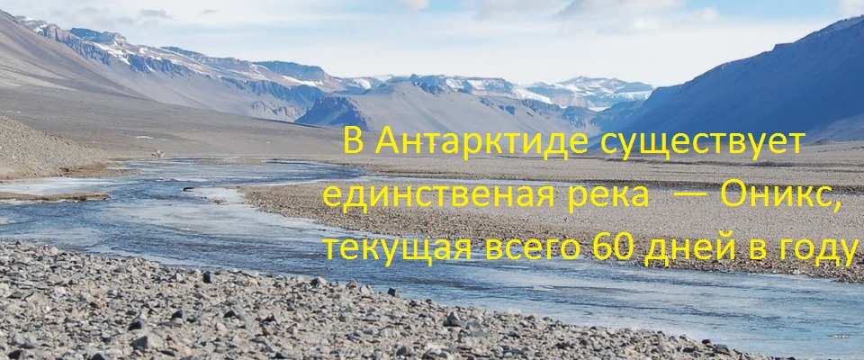

Антарктида (с греческого ἀνταρκτική — противоположность Арктике) — самый южный континент на нашей планете. Помимо полюса холода ( температура здесь опускалась почти до -90° С), в Антарктиде располагаются точки самой низкой относительной влажности воздуха, самого сильного и продолжительного ветра и самой интенсивной солнечной радиации.